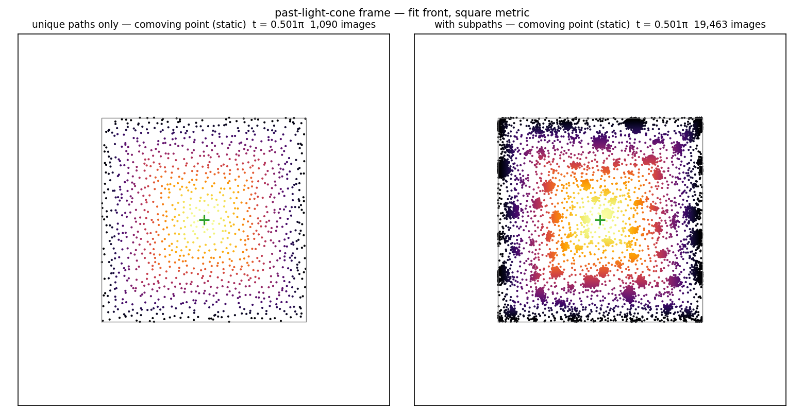

w(z) over the whole loop (Chris's question): the full-spectrum universe runs radiation → dust → radiation, with a closed form
Analysis of the stored FULLSPEC dumps (3+1 T = 120, 2+1
T = 150; no new campaign) · closed-form overlay
563ed87
Chris asked what w looks like across conformal time, not just at the
turnaround. Answer: the full-spectrum model runs the standard
cosmological ordering. The physical velocity per axis is
Σ ajbjcos(bjz + fj)
+ a₁cos z: away from the turnaround the comoving-offset
term a₁cos z dominates
(⟨a₁²⟩ = ⅓), while the ~T wiggle
terms contribute an incoherent O(1/T) floor. That gives the closed
form
w(z) = (d/3)(cos²z/3 + 1/T):
radiation-like w → d/9 at the bang and crunch
(→ exactly ⅓ in 3+1 as T → ∞),
cooling on a cos² profile to the w = d/(6T) dust floor
at the turnaround.
3+1, T = 120 (N = 73,822): measured
w(bang) = 0.343 vs closed form
⅓ + 1/T = 0.342; the E ~ b
curve is graphically indistinguishable from the prediction over
the entire loop. The E ~ length dictionary agrees at the
turnaround and runs ~13% hotter at the endpoints.
2+1 twin (T = 150): w(bang) = 0.228 vs
predicted (2/3)(⅓ + 1/T) = 0.227;
turnaround 0.0034.
The few-term model never did this. Its w(z) was
resolution-independent (w ≈ 0.07–0.19
depending on ensemble/dictionary) with no radiation limit. The
full-spectrum model instead reproduces the radiation →
matter cooling sequence of standard cosmology from pure packing
statistics, with no fitted parameters.
Dictionary robustness. E ~ b and
E ~ arc-length agree to 4 decimals at the turnaround
and within ~13% at the endpoints (the arc-length weight
correlates mildly with endpoint speed).
GPU observer frames: the viewer's past-light-cone construction, baked from campaign dumps — and subpath groups appear as galaxies on the sky
New pipeline: cuda/frame_bake.cu (GPU baker, validated
hit-for-hit against an independent Python oracle) +
braidlab/frames.py (loader, aberration/Doppler remap,
in-universe measurements) + plots/render_frames.py
(video export) · commits
7eb4fe8,
5b1ce21,
2cfa78d
Kevin's idea: move the viewer's reference-frame construction (pause,
rewind, expand a pulse front, image every worldline crossing with
its redshift) onto the GPU so frames bake from full campaign dumps
— data first, then analysis and video from the same files.
Baking 480 observation instants of a 19,413-path universe takes
~7 min on a 4090 (60 instants of a 1,087-path one: 12 s);
hits are stored frame-independently so static/moving observer views
are a draw-time remap, exactly as in the viewer.
The first product: one comoving observer, the whole cycle
(t = 0.05π → 0.95π, 480 frames).
Left: the unique jam alone (fullspec 2+1, T = 100,
1,118 paths). Right: the same universe with its 18,295 subpaths.
Colors are received redshift (bright = low Z, dark = high).

The turnaround still. The unique-only sky is featureless —
exactly uniform, as measured. The subpath-filled sky clumps
into knots: each blob is one group (a unique and its
co-grouped subpaths sharing the hidden a₁ anchor of the
07-22 partner-correlation entry). An in-universe observer sees
structure — galaxies against a uniform background —
formed purely by the subpath admission rule.
Validation. The CUDA baker matches a pure-Python
reference port of the viewer math hit-for-hit (both front modes,
both observer types, multiple instants); the one subtlety was the
observer's chi ≈ 0 self-contact branch, which now
snaps from an epsilon band so host/device libm ulp differences
cannot flip it.
Queued measurements. The same .frames files feed
quantitative in-universe observations: redshift-binned number
counts N(<Z), ghost-image multiplicity, and — motivated
by the clumping above — angular clustering of the observed
sky with vs without subpaths, to put a number on the structure an
observer sees.